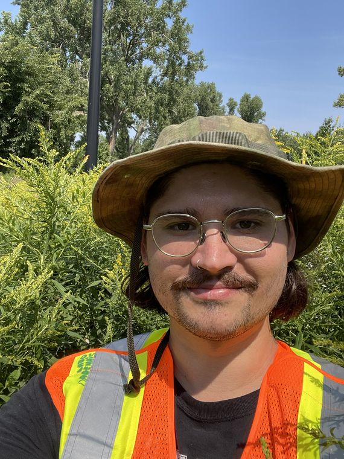
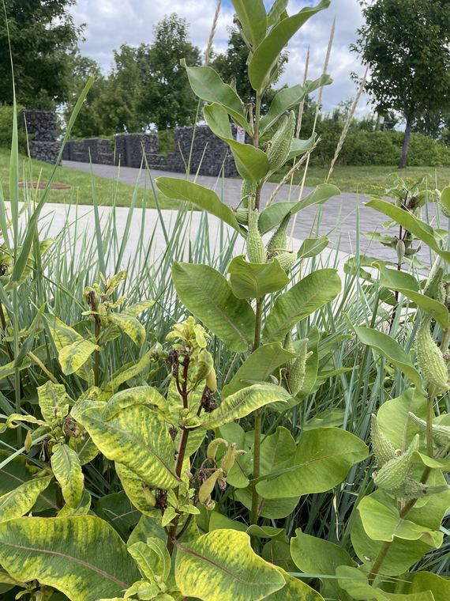

Write for the reader who is not present
A protocol applied in Sweden and Estonia must function without its author on site. Every step requires a rationale, a unit and a quality check.
Standardizing how BioReStorm monitors the plants in stormwater infrastructure

Bioretention systems are designed to treat stormwater, and their vegetation performs much of that work. However, no two studies have monitored that vegetation in the same way.
BioReStorm is an international research project examining how stormwater bioretention systems evolve as they age: which species tolerate salt, drought and flooding, which colonize over time, and what these changes mean for treatment performance and rehabilitation. Partner teams in Canada, France, Sweden and Estonia study sites across very different climates; as such, their results are only comparable if data are collected using a common method.
My role with the Montréal team was to make that comparison possible: review how vegetation in these systems has been monitored to date, design a single method for all four partners, and identify local sites on which to apply it.

I began with a review of vegetation monitoring in bioretention cells, bioswales and green roofs. While each study was sound on its own terms, differences in methodology prevented direct comparison.
Compared sampling designs, monitoring timeframes and cover-assessment methods across published studies, and identified where they diverged.
Output: the case for a standardized method
Developed a sampling protocol based on rectangular belt transects that cross each cell’s moisture gradient. The method adapts to uniform or heterogeneous planting and accounts for tree canopy and site disturbances.
Output: a protocol adopted in four countries
Assessed more than 200 green stormwater installations in Montréal, Brossard, Longueuil and Laval. Satellite imagery narrowed these to 27 candidates, and I contacted municipal engineers to obtain maintenance and substrate records.
Output: a shortlist and standardized site record sheet
Developed an interactive ranking of the 38 experimental cells on Avenue Papineau based on Shannon diversity and relative abundance, with adjustable weightings for different research questions.
Output: a prioritized sampling order
A note on confidentiality. The protocol and my final report belong to the research team; this page therefore describes the approach without reproducing either. I would be glad to discuss the details in person.
Avenue Papineau is a 1.5 km street reconstruction in Montréal, completed in 2017 and designed in part to relieve a combined sewer prone to frequent overflows. The corridor includes 15 vegetated retention basins and 24 bioretention cells constructed in low-infiltration silt, with varying blends of topsoil, compost and sand.
The site was well suited to BioReStorm for three reasons: maintenance has been minimal, allowing the plant community to evolve; the IRBV already held baseline vegetation surveys; and, at eight years old, the vegetation is in the developmental phase the project aims to study.
The City of Montréal is exploring the diversion of street runoff into tree pits; however, winter runoff carries de-icing salt. In parallel with BioReStorm, I contributed to a study of 18 draining tree pits on rue Bélanger in Rosemont, planted with Kentucky coffeetree and ‘Morton’ elm. I established the study’s rainfall record, mapped the site, and collected the groundwater measurements.
Each pit receives one of three treatments: no street runoff, runoff during the growing season only, or year-round runoff. The study addresses a central question: how much runoff can a tree pit receive before tree health is compromised?
A protocol applied in Sweden and Estonia must function without its author on site. Every step requires a rationale, a unit and a quality check.
Weeding, trimming and sediment removal shape the plant community as strongly as substrate selection. I now request maintenance records at the outset of any site assessment.
Narrowing 200 sites to 27 using satellite imagery and municipal records ensured that site visits were directed where they mattered most.
Substrate specifications, maintenance logs and as-built drawings are held by municipal engineers. Productive working relationships with them are an essential part of the work.
Available now for junior and EIT positions in environmental, remediation, ecological and restoration engineering, and water resources in Vancouver
Email is the most reliable way to reach me, and I would be glad to discuss any of these projects in more detail.